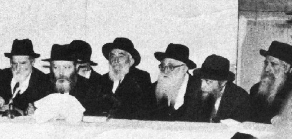

‘You Can Already Feel in the Air That the Rebbe Is About to Come’
In 5726, Yitzchak Nimtzovitz of Galei Tzahal, Israel’s Army Radio, attended a farbrengen that took place in Kfar Chabad. During his visit there, he interviewed two of the most prominent Chabad activists in Eretz Yisroel: R’ Zushe Wilimovsky (HaPartizan) and R’ Yona Adelkopf. During the interview, the Chassidim described the Rebbe and the Chabad-Lubavitch Movement in their own inimitable style. Mr. Nimtzovitz broadcast their fascinating description in a special Galei Tzahal program dedicated to outstanding Jewish personalities. The report in full.
Compiled By Shneur Zalman Berger
Translated by Michoel Leib Dobry

WHEN THE CHASSIDIM SPEAK ABOUT THE REBBE…
Thousands of Chassidim and supporters of the Lubavitcher Rebbe stream into Kfar Chabad each year to participate in the traditional celebration of the Holiday of Redemption, commemorating the release from Russian imprisonment of the founder of Chabad Chassidus, the Baal HaTanya, the Alter Rebbe, Nishmaso Eden. Kfar Chabad, the village of the Chassidim of the Lubavitcher Rebbe, adorns itself on this day with the joy of those participating, and not just those who are outwardly affiliated with this ever-growing movement. This includes free-thinkers and public figures who see the Chabad Movement (acronym for Chochma, Bina, Daas – wisdom, understanding, knowledge) as one of the most positive religious phenomena of the Jewish People. This movement has engraved upon its banner the cause of Ahavas Yisroel, and in the words of the current Rebbe of the Lubavitcher Chassidim, Rabbi Menachem Mendel Schneersohn, the seventh generation since Baal HaTanya, based in New York: “The entire Jewish People are one body and one soul, and there exists the need for Jewish unity.”
I sat with two Chabad Chassidim, original settlers in Kfar Chabad, Rabbi Zushe Wilimovsky and Rabbi Yona Adelkopf, who enlivened me with their remarks about the Lubavitcher Rebbe and the movement to which they belong. Rabbi Zushe lived in Selz, where his father served as the local rav, enduring all the events of [the Second World] War. However, he managed to escape from the ghetto and joined the partisan groups in Russia, fighting with them against the Germans in the Smolensk forests. At the end of the war, he emigrated to Eretz Yisroel, received his rabbinical ordination at the Lubavitcher yeshiva in Tel Aviv, and was one of the first settlers in Kfar Chabad, where he married and established his family. Today, his life is dedicated to the Chabad Movement in his role as secretary of Vaad Kfar Chabad. He does much with the other Chabad askanim to strengthen the Kfar.
R’ Yona Adelkopf, a tall and stocky man, was born in Nikolayev, Ukraine. He was a mechanic by profession when he was still in Russia. When he was working in Rostov, he was drawn to the Chabad Movement in the underground, and he learned clandestinely in a yeshiva. At the conclusion of the war, he also emigrated to Eretz Yisroel with thirty other families who had come at the Rebbe’s command, and they established their village, Kfar Chabad, located fifteen kilometers from Beit Dagan.
In the course of time, this village has increased in size, and today it numbers two hundred families, some of whom are young people, under forty years of age. Most of the Kfar’s residents are Russian émigrés, who speak mainly Russian among themselves. All of them are Torah scholars; many of them have even learned in higher education. The main architect for the establishment of the Kfar Chabad was the [Previous] Rebbe himself in all his glory, who advised his Chassidim to emigrate to Eretz Yisroel and publicly spread his teachings.
The world of the Kfar’s residents is a life filled with relevance and substance. Each day from four to six in the morning, before they go out to work, they come to learn a chapter in Gemara and Mishnayos. They do the same during the evening hours – from six until midnight. Four hundred students study in the Kfar’s central yeshiva, and there are plans to enlarge the institution. Their hope is to double the number of residents in Kfar Chabad within two years and to establish additional businesses with the help of the Lubavitcher Rebbe’s Chassidim from America and the Anglo-Saxon countries.
Vocational institutions also exist in Kfar Chabad, magnificent institutions. A yeshiva student who doesn’t show special talents in his learning and has difficulties in continuing with yeshiva studies is transferred to one of the vocational schools to learn a trade: carpentry, printing, or agriculture. He works half a day and studies Chassidic philosophy during the other half.
Chabad Chassidim also tend to the girls, and Kfar Chabad has a primary school where 150 girls study, along with a professional vocational school and a teachers’ seminary. The teachers learn in seminary for four years, and then they immediately receive work in one of the twenty schools for Chabad Chassidim spread throughout Eretz Yisroel included in the state education network, in which about six thousand students learn.
It’s literally a pleasure to speak with Chabad Chassidim. They’re always happy and cheerful, cleaving to G-d and their holy Rebbe. They see him not only as their Rebbe, but as the king of the entire Jewish People. When they’re speaking about their Rebbe, don’t interrupt them. Their words become most impassionate, their eyes sparkle, and you feel their tremendous faith and total devotion to the Rebbe. Seventy Chassidim were privileged this year to fly to New York for the High Holidays. Rabbi Zushe and Rabbi Yona were among the lucky ones, and they spoke with the Lubavitcher Rebbe in a private audience. Close to three thousand Chassidim from all over the world came to the Rebbe for the High Holidays, among them Sephardic Jews and new Chassidim, primarily young people who learn in the yeshivos opened by the Lubavitcher Rebbe several years ago throughout North Africa, giving him a great reputation in these countries.
Tens of thousands of students, coming from both ultra-Orthodox and secular homes, enraptured by the holy Torah, learn in eighty yeshivos that the Rebbe has founded in the United States. There have also been many cases where these yeshiva students bring their assimilated parents back to their Jewish roots. The Rebbe personally meets with his Chassidim and those seeking his guidance three times a week, from six in the evening until the wee hours of the morning. R’ Zushe and R’ Yona submitted personal questions to the Rebbe in order to receive his advice, and he responded to each one of them. At the conclusion of their visit, the Rebbe asked them to deliver his blessing to every Jew that they meet in Eretz Yisroel for a good new year. In addition, he instructed Chabad Chassidim to expand Kfar Chabad, establish additional communities for Chabad Chassidim, cleave to the Torah, and love Eretz Yisroel.
“HE RECEIVES ALMOST AS MANY LETTERS AS THE PRESIDENT OF THE U.S.”
R’ Zushe and R’ Yona tell me with much enthusiasm: “Not only do Chassidim visit the Rebbe. Politicians, generals, and all prominent Americans come to consult with him. He is a man of great stature, second only to the President of the United States in the number of letters he receives from his followers and disciples throughout the globe. Fortunate are we to have such a Rebbe. He is not only our pride – he is the pride of the entire Jewish People.”
With great reverence, his ardent Chassidim add: “You can already feel in the air that the Rebbe is about to visit Eretz Yisroel. You live unrestricted lives; you can’t feel this. But as Chassidim, we already feel it; if only the Rebbe would come and settle in Eretz Yisroel. Our joy would have no limit.”
Chabad Chassidim see themselves as being entrusted with a tremendous mission: to bring children back to the meaningful path of Ahavas Yisroel, not out of overzealous religious fanaticism, but out of love. “We always speak to the good inclination,” R’ Zushe tells me. “The evil inclination is the inclination of war, and we refrain from arguing with it.”
They work to bring the word of Chabad to the kibbutzim, from Mapai to Shomer HaTzair. They have a connection with the secretariat of the kibbutzim, and they set a special day for them to come to one kibbutz or another. The Chabad people appear in the kibbutz’s large dining hall: two of them speak about Chabad Chassidus and another three comprise a choir to sing chassidic songs. They speak mainly about Chassidus, faith from the heart, and love for fellow Jews. Afterwards, they begin to inspire the kibbutz members with their singing. R’ Zushe, who participates regularly in these encounters, tells me that the enthusiasm among the kibbutz members is beyond description, and they welcome the Chabad Chassidim with great warmth. Many of them join the singing, and afterwards they ask questions. The Chassidim distribute material on Chabad Chassidus, and the kibbutznikim are invited to visit Kfar Chabad, where the Chabad Women’s Organization organizes hospitality for them. There have even been cases where the kibbutz members expressed their desire to begin learning in a Chabad yeshiva, and many of them even asked them to send a chazzan for Yom Tov and to open a synagogue on the kibbutz.
But Chabad Chassidim don’t just operate on the kibbutzim; their work is also spread throughout the cities. Chabad Chassidim appear in almost every large school, per special agreement with the administration, which sees this as a positive educational program.
However, even this is not enough. Thousands of children roam the streets during after-school hours, wasting their valuable time. Chabad Chassidim have created for these children “Chedrei Torah Ohr,” where kids gather together after school and several young Chassidim teach them Chassidic songs and stories about Chassidus and their holy Rebbe. The children absorb their words thirstily. R’ Yona Adelkopf, who began spreading the teachings of Chabad Chassidus when he was still in Rostov, Russia, initiated the idea of “Chedrei Torah Ohr” clubs, and he is their living spirit. He has already established dozens of these clubs all over the country, and his students continue to grow in number.
Is there a budget for this? He doesn’t deny that there are many difficulties, yet there are those who come to his aid, and R’ Yona doesn’t give up. He has just requested assistance from the Ministry of Education for his programs. He hopes to receive the requested budget allocation, and for his part, he’s doing the blessed work of teaching Jewish children about Ahavas Yisroel. So why shouldn’t they come to his assistance?
“EVERYTHING FLOWS ACCORDING TO THE REBBE”
Chabad Chassidim customarily don’t do a thing without asking the Rebbe’s advice first. A copy of every letter sent from the Kfar’s secretariat is also forwarded to the Rebbe sitting in New York. All decisions made at general Kfar Chabad meetings and by all the Kfar’s chosen representatives must receive the Rebbe’s approval.
However, it isn’t just public issues that are brought before the Rebbe. Even in his private life, a Chabad Chassid doesn’t do a thing without receiving his Rebbe’s permission. If he decides to open a business, if a position is offered to him, if he chooses to expand his business or sell it, he’ll first write to the Rebbe and wait for his answer before making a move. When a young person decides to get married, he’ll submit the proposed matches to the Rebbe, detailing each one of them, and only the Rebbe will determine whom he shall marry.
If, Heaven forbid, a Chassid or a member of his family becomes ill, and the doctor feels that he has to undergo an operation or stop working for a certain period of time, the Chassid will not follow the doctor’s orders until the matter is presented to the Rebbe first.
As I bid goodbye to R’ Zushe and R’ Yona, they expressed their wish that any Jew who has sorrows and worries (and what Jew doesn’t have sorrows and worries?) should write to the Rebbe and ask his advice, and then those asking will see how good and proper the Rebbe’s advice is. And as they were doing this, they stuck the Rebbe’s address in New York into my hand.
Berger. "‘You Can Already Feel in the Air That the Rebbe Is About to Come’." Beis Moshiach, no. 867 (January 31, 2013).